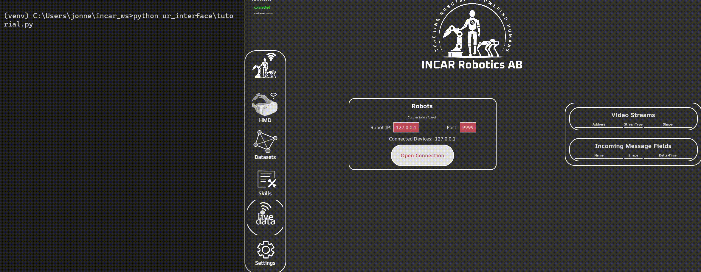
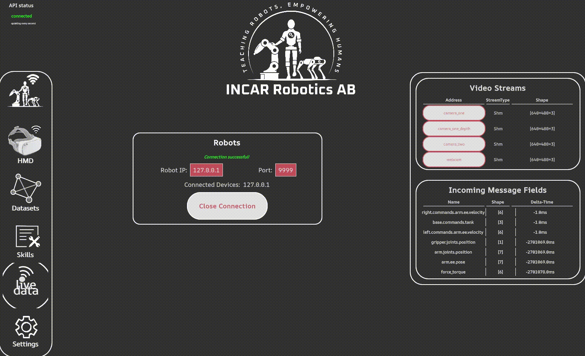

Retrieving state
In order to collect our datasets, we also need to record, and therefore stream, our robot state back to the system. If you already have your robot setup running, you can skip to the dataset creation.
Streaming state
There are multiple ways to stream the robot state to the Incar Skill system, but the simplest way is to just send state back at the same frequency as we are handling our commands. Building on the example from the teleoperation tutorial, we can do the following:
| my_robot.py | |
|---|---|
1 2 3 4 5 6 7 8 9 10 11 12 13 14 15 16 17 18 19 20 21 22 23 24 25 26 27 28 29 30 31 32 33 34 35 36 37 38 39 | |
Code Explained
The loop_callback in line 33 takes the IncarRobotInterface as an input, so we can set and publish state on it. We will send out the robot state per robot module. In this case, you could think of the arm and the gripper being separate robot modules, but for a dual arm system you could for instance have a left_arm module and a right_arm module, or for mobile robots you could have a base module. The module name will basically act with a key for how we can record the features.
It is possible to send various types of robot state, namely: end effector pose, end effector velocity, joint positions, joint velocities, and joint efforts. It is also possible to send multiple types of robot state at the same time. For the arm, we can send end effector pose and joint position state, and for the gripper, we can send the joint position. Note that the system expects all state to be in a list of floats.
After we have set the robot state, we can call the interface.publish_state() method to send it over to the Incar Skill System. Now, when we start our robot, and connect to it in the GUI, you can see that we are receiving the state as separate features in the system. The features are keyed by [module_name].[state_type], for example arm.joints.velocity. This is how we can key this feature for dataset recording.

Additional robot sensors
Additional sensors have to be declared in the sensor_names of the IncarRobotInterface. The sensor name is the key with which the feature can be recorded as well. Sensor data can then be published using interface.publish_sensor("[sensor name]", data) where data is a list of floats. The example above streams a feature keyed force_torque to the Incar System.
Camera streaming
Note
With Local Cameras, we mean cameras that are connected to the device that the Incar Skill System is running on. If your camera is connected to the robot (e.g. on a mobile robot), please select 'Remote Cameras'
In order to register a camera in the Incar Skill System, edit the workspace_config.json file of the workspace (you can find this in the root workspace path). You can add your cameras in the config based on type; the most straight-forward way to add a new camera is as opencv type, where you can specify the openCV index as port parameter.
Other specific camera implementation might have more settings for the camera. Currently, realsense and oak1 cameras are supported, however, it is possible to also make your own custom specific camera implementation if you need more control over the camera settings.
{
"cameras": {
"camera_one": {
"type": "realsense",
"serial_number": "218622277822",
"exposure": 13500,
"white_balance": 3200,
"width": 640,
"height": 480,
"frame_type": "RGBD"
},
"camera_two": {
"type": "oak1",
"device_id": "1844301051E042F500"
},
"webcam": {
"type": "opencv",
"port": 0
}
},
...
}
After changing the workspace_config, make sure to reload the workspace for the changes to take effect.
Note
With Remote Cameras, we mean cameras that are connected to the device where you will start the IncarRobotInterface. If your camera is connected directly to the device that is running the Incar Skill System, please select 'Local Cameras'.
In order to stream your camera frames to the incar system over the internet, you need to make a camera implementation for your camera. This implementation should have two classess with the following signatures:
from dataclasses import dataclass
@dataclass
class MyCameraConfig:
# any config parameters here
def build_camera(self) -> "MyCamera":
return MyCamera(self)
class MyCamera
def __init__(self, conf: MyCameraConfig):
# Initialise the camera here
def next_frame(self) -> np.ndarray:
# Return the frame in HxWxC, RGB
For examples, please check the custom camera documentation. Then, simply instantiate your configs and add them to the IncarRobotInterface:
| my_robot.py | |
|---|---|
1 2 3 4 5 6 7 8 9 10 11 12 13 14 15 16 17 18 19 20 21 22 23 24 25 26 | |
Local camera streams appear in the live data panel at any point. Remote camera streams appear in the live data panel while you are connected to the robot. You can click on the entries to inspect the camera stream.

Next Step: Creating and recording a dataset.